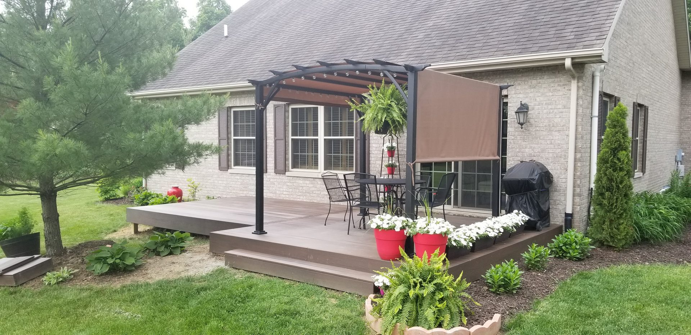
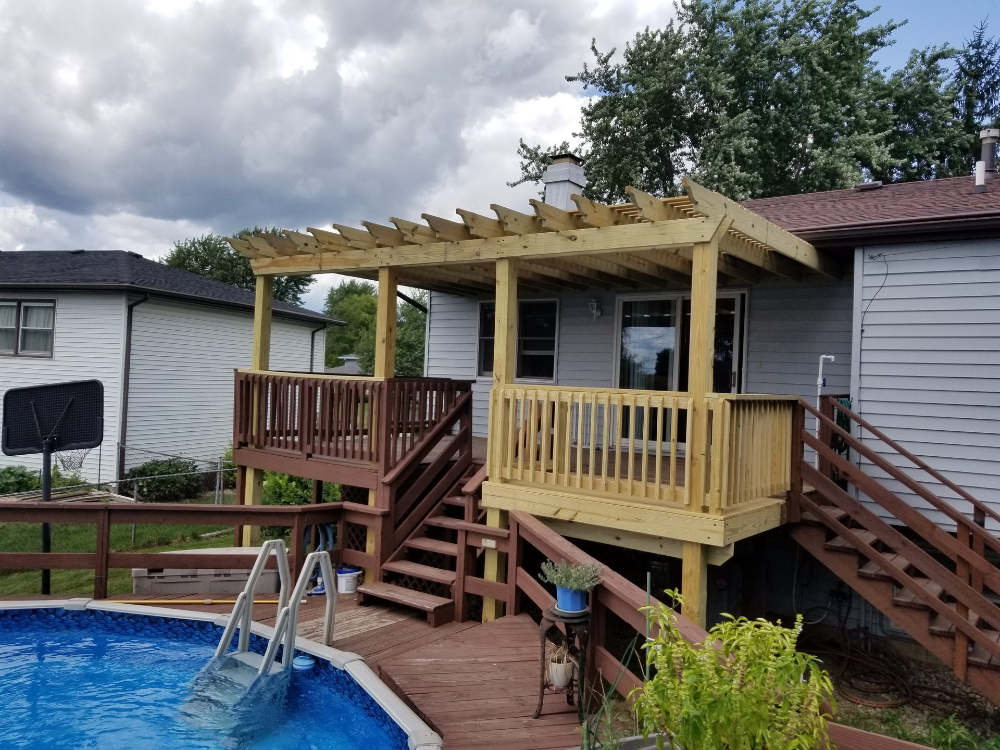
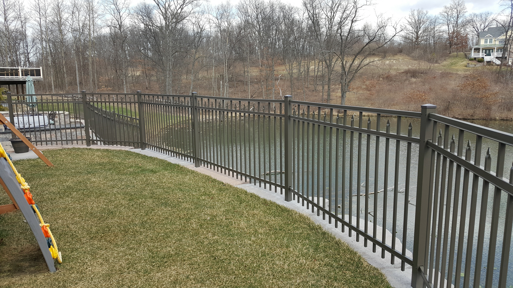

Crafted for
Indiana's Outdoors.
From a backyard deck to full commercial perimeter fencing — every build rooted in craft, guaranteed to last.

Custom Deck Construction
Whether you want a classic cedar deck or a low-maintenance composite build, Woodland Fence and Deck delivers quality that stands up to Indiana winters and lasts for decades. We handle every detail from design to permit to final railing.
- Cedar and pressure-treated lumber decks — natural, durable, classic
- New builds and full replacements
- Deck repairs and board replacement
- Custom railings — wood, cable, wrought iron
- Permits pulled and inspections handled
- 5-year workmanship guarantee

Fencing That Means Business — Residential & Commercial
Fencing is one of our biggest and most in-demand services — and for good reason. Whether you're securing a backyard or locking down a commercial property, we build fences that hold up, look sharp, and don't leave gaps. We handle full demolition and haul-away of any existing fence before the new one goes in.
Residential Fencing
Keep the neighbours out. Keep the dog in. Give your yard a defined edge that actually works.
- Privacy wood fencing — board-on-board, solid panels, no gaps
- Dog-secure enclosures — no gaps at the bottom, secure latching gates
- PVC / vinyl — low maintenance, clean look, no rot
- Wrought iron and ornamental — elegant, heavy-duty, long-lasting
- Chain link — durable and cost-effective for large yards
- Post installation on concrete, rock, and soft soil
Commercial Fencing
Securing commercial property is our bread and butter. Yards, lots, warehouses, facilities — we build perimeter fencing that controls access and keeps your assets protected.
- Heavy-gauge chain link — industrial-grade, galvanized or vinyl-coated
- Barbed wire toppers for high-security perimeter control
- Access control fencing with gate integration
- Yard and lot perimeter fencing for equipment and vehicle storage
- Warehouse and facility security fencing
- Farm and agricultural perimeter fencing — livestock, pasture, property lines
- Large acreage runs — no job too big

Gates — Manual & Automated
We fabricate our own custom gates in-house — swing, slide, and everything in between. Whether you need a simple walk-through gate or a full driveway automation system, we build it to match your fence line and handle years of daily use without issue.
- In-house custom gate fabrication — wood, steel, and iron
- Slide gates and swing gates — single and double
- Electric gate automation via LiftMaster operators
- Remote access, keypad, and intercom systems
- Driveway gates for residential and commercial properties
- Pedestrian and walkway entry gates
- Fabrication matched to your existing fence or custom design
We partner with LiftMaster for gate automation — industry-leading operators backed by a full support ecosystem. Browse LiftMaster gate operators →
Get a Free Gate Estimate
Pergolas & Outdoor Structures
Extend your living space outdoors with a custom structure designed to complement your home and property. From full pergolas to accessory structures that add character and functionality, we build with quality lumber and hardware that lasts.
Pergolas
- Freestanding and deck-attached pergolas
- Cedar, redwood, and pressure-treated lumber options
- Custom sizing to fit any outdoor space
- Lattice and louvered roof designs
- Integrated lighting and fan mounting
Accessory Outdoor Structures
- Trellis panels — freestanding or deck-attached, cedar and treated lumber
- Pergola lattice for climbing vines, roses, and creeping plants
- Custom sizing and spacing designed for specific plant varieties
- Post and frame systems for large climbing plants
- Privacy screens that double as living walls

Site Work, Retaining Walls & Drainage
Sloped terrain, erosion issues, and poor drainage don't just look bad — they get worse over time. We build retaining walls and handle site prep that protects your property and sets every other project up for success.
- Block, stone, and timber retaining wall systems
- Engineered drainage behind all walls — no waterlogging
- Tiered and terraced landscape designs
- Erosion control and slope stabilization
- Drainage solutions — French drains, grading, and diversion
- Site preparation for deck, fence, and structure installs
- Residential and commercial installations
How It Works
From Estimate to Guarantee
A straightforward process designed to be easy on you — every step of the way.
Free Estimate
We visit your site, assess the project, and deliver a clear, competitive quote within days.
Permits & Planning
We handle all permit applications, utility location calls, and project scheduling — you don't lift a finger.
Demo & Build
We remove what's old, haul it away, and build the new — one crew handling everything start to finish.
5-Year Guarantee
All workmanship is backed by our 5-year guarantee. Many materials carry lifetime manufacturer warranties.